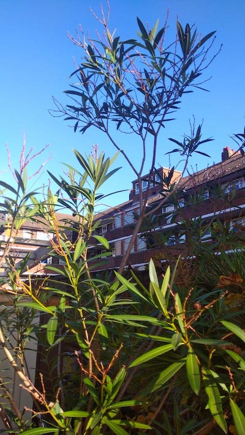

Meilleurs voeux pour 2023!

(Londres, septembre 2022)
- Pietà l‘è morta, Canti di guerra, di lavoro e d‘amore, Silvia Tarozzi
- Blue Shit, Blue Alibi, Mica Levi
- Water Wheel One, Terra, Julian Lynch
- When Will It Ever End, Brand New Feeling, The Awakening
- Nowhere, Out there in the middle of nowhere, JAB
- Spring, Spring, Steven R. Smith
- Love Farewell, Good and Green Again, Jake Xerxes Fussell
- Band of Gold, Mother of Pearl, Sarah Davachi
- Pika, In Otherness Oneself, Kaja Draksler
- Ital is vital, Afrikan Culture, Shabaka
- The Journey, Voices of Bishara, Tom Skinner
- I'm So Happy Now, Telling The Truth, Willie Wright